Systems
A system is a set of interconnected components gathered to create a specific function.
A system has boundaries, and the function it generates is the interaction of the system with other sets of systems, which we group as the environment.
Dynamical Systems
Assume that we have a set of variables representing the variables in the system.
When we know the values of these variables, we can understand the current situation of the system.
Let x represent the state of the system.
In a dynamical system, states are evolving with time:
$$ x = x(t) $$
A mathematical representation of a physical system (a mathematical abstraction) can be:
- An $n^{th}$-order differential equation, or
- A first-order differential equation in continuous time.
Example 1

Question: Explain the relationship between $x$ and $\dot{x}$ represent the relationship with a graph and investigate their harmony assuming no externall energy loss.
$$ \dot{x}(t) = \frac{d}{dt}x(t) $$
Here:
- $x(t)$ is the state (position on the system trajectory at time $t$).
- $\dot{x}(t)$ is the rate of change (derivative) of the state at time $t$.
Solution
The equation of motion is:
$$ m\ddot{x}(t) + k x(t) = 0 $$
$$ x(t) = A\cos(\omega t + \phi),\qquad \omega=\sqrt{\frac{k}{m}} $$
so the velocity is
$$ \dot{x}(t) = -A\omega\sin(\omega t + \phi) $$
Define the state vector
$$ \mathbf{x} = \begin{bmatrix} x_1 \\ x_2 \end{bmatrix} = \begin{bmatrix} x \\ \dot{x} \end{bmatrix} $$
The first-order state equations are
$$ \dot{\mathbf{x}} = \begin{bmatrix} 0 & 1 \\ -\frac{k}{m} & 0 \end{bmatrix} \mathbf{x} $$
Phase-space (ellipse) relation — eliminate time
Eliminating time between $x(t)$ and $\dot{x}(t)$ gives the phase-space equation (an ellipse):
$$ \left(\frac{x}{A}\right)^2 + \left(\frac{\dot{x}}{A\omega}\right)^2 = 1 $$
or equivalently
$$ \frac{x^2}{A^2} + \frac{\dot{x}^2}{A^2\omega^2} = 1 $$
So the trajectory in the $(x,\dot{x})$ plane is an ellipse with semi-axes $A$ (in $x$) and $A\omega$ (in $\dot{x}$).
In Python it is possible the print the graph of the relationship.
import numpy as np
import matplotlib.pyplot as plt
from scipy.integrate import solve_ivp
# System parameters
m = 5.0
k = 5.0
# ODE definition
def mass_spring_ode(t, x):
return [x[1], -k/m * x[0]]
# Initial conditions
x0 = [1.0, 0.0]
# Time span
t_span = (0, 10)
t_eval = np.linspace(*t_span, 1000)
# Solve ODE
sol = solve_ivp(mass_spring_ode, t_span, x0, t_eval=t_eval)
# Phase plot: velocity vs position
plt.figure(figsize=(6,6))
plt.plot(sol.y[0], sol.y[1])
plt.title('Phase Plot: Velocity vs Position')
plt.xlabel('Position x (m)')
plt.ylabel('Velocity x_dot (m/s)')
plt.grid(True)
plt.axis('equal') # Equal scaling for x and velocity axes
plt.show()
You can run this code on colab or in your system and see the graph yourself with the link below
if there was a damping element connected to mass parallel to the spring the result would be :
import numpy as np
import matplotlib.pyplot as plt
from scipy.integrate import solve_ivp
# System parameters
m = 5.0 # mass (kg)
k = 5.0 # spring constant (N/m)
c = 0.5 # damping coefficient (N·s/m)
# ODE definition with damping
def damped_mass_spring_ode(t, x):
dxdt = [x[1], -k/m * x[0] - c/m * x[1]]
return dxdt
# Initial conditions: x=1 m, velocity=0 m/s
x0 = [1.0, 0.0]
# Time span
t_span = (0, 100)
t_eval = np.linspace(*t_span, 1000)
# Solve ODE
sol = solve_ivp(damped_mass_spring_ode, t_span, x0, t_eval=t_eval)
# Phase plot: velocity vs position
plt.figure(figsize=(6,6))
plt.plot(sol.y[0], sol.y[1])
plt.title('Phase Plot: Damped Mass-Spring System')
plt.xlabel('Position x (m)')
plt.ylabel('Velocity x_dot (m/s)')
plt.grid(True)
plt.axis('equal')
plt.show()
# Optional: plot x and x_dot over time
plt.figure(figsize=(10,5))
plt.plot(sol.t, sol.y[0], label='Position x (m)')
plt.plot(sol.t, sol.y[1], label='Velocity x_dot (m/s)')
plt.title('Damped Mass-Spring System Over')
You can run this code on colab or in your system and see the graph yourself with the link below